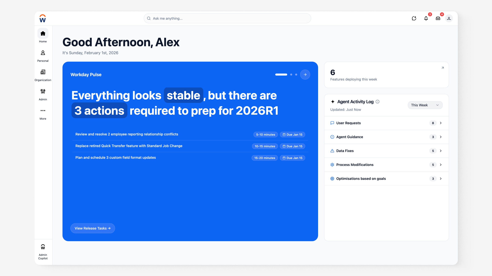

Resolving Workday Maintenance Traps with Agentic Experiences

TL;DR
Key Features
The Glass Box
Trust comes from visibility. Before the agent changes anything, it surfaces what it intends to do, why, and how to stop or undo it — turning an opaque automation into a legible, accountable action.
Reversible by Design
Every agentic action carries a clear path back. Administrators delegate the tedium without surrendering control, because nothing the agent does is a one-way door.
The Funding Prototype
The argument wasn't a deck — it was a working experience. Leaders touched the agent resolving a real maintenance trap, and the trust question answered itself.
Deep Dive
Trust as the Real DeliverableWhy governance, not automation, was the hard part
The blocker was trust, not capability
The technology could automate maintenance long before leadership would let it. The design problem was making the agent's behavior trustworthy enough to delegate to.
Legibility unlocked the budget
Once leaders could see exactly what the agent would do and undo, the risk calculus flipped — and the funding followed.
ReflectionDesigning the argument, not just the feature
What worked
Putting a live prototype in decision-makers' hands beat any amount of slideware. The experience carried the argument.
What I'd refine
Bringing the Glass Box framing to leadership earlier — the trust story was the unlock, and it deserved the spotlight from day one.